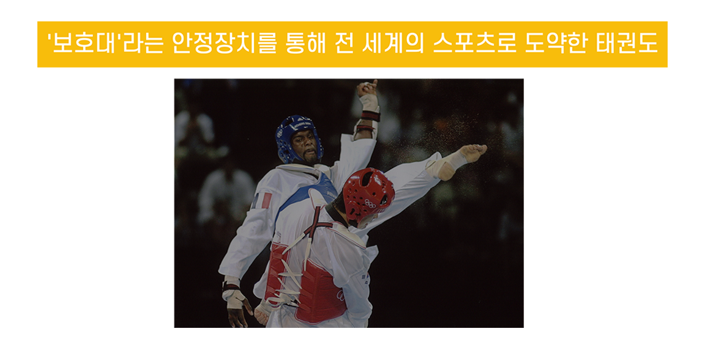
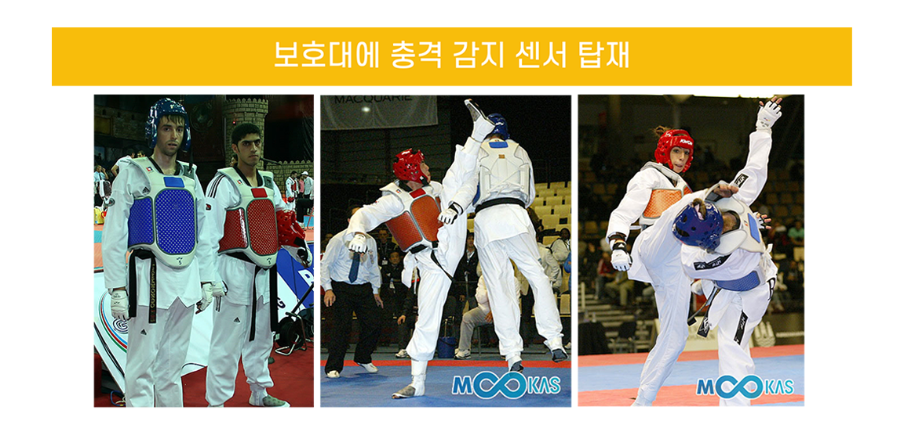
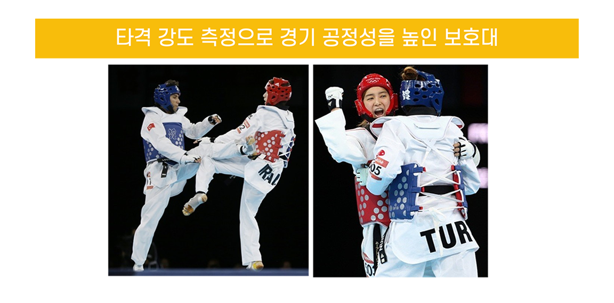

태권도는 역동적인 겨루기와, 아름다운 발차기로
전 세계의 수많은 사람들을 매료시킨 무도입니다.
하지만, 이 화려한 무도의 뒤에는 선수들을 보호하기 위해 철저한 준비가 필요하다는 것 알고 계신가요?
지금부터, 선수들을 보호해 주는 보호대에 대해서 이야기 해 보겠습니다.
태권도, 보호대를 장착하고
스포츠로 변신하다!
스포츠로 변신하다!
보호대 탄생?
1/2
“관장님! ㅇㅇ이가 다쳤습니다...”
1960년대, 태권도 경기의 인기와 함께 부상 빈도가 증가하면서, 보호대의 필요성이 대두되었습니다.
당시 태권도 선수들이 처음 시도했던 검도 보호대는
태권도의 동작에 맞지 않았습니다.
혁신의 시작!
1/3

경기 규칙을 바꾸다!
- 
-

출처: 연합뉴스(https://n.news.naver.com/mnews/article/001/0002712754)
출처: 무카스(https://mookas.com/news/9399)
-

출처: 아시아투데이(https://www.asiatoday.co.kr/view.php?key=681489)
미래 기술과의 융합!
버츄얼 태권도!